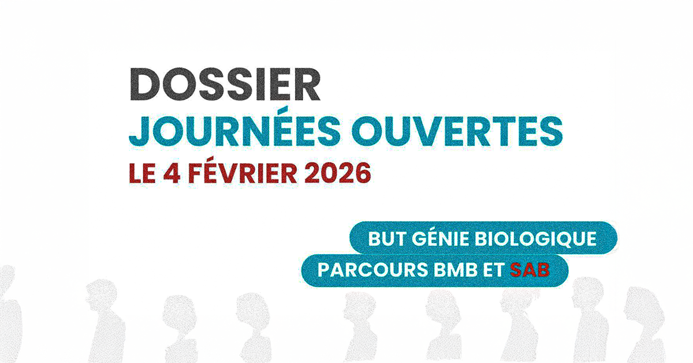
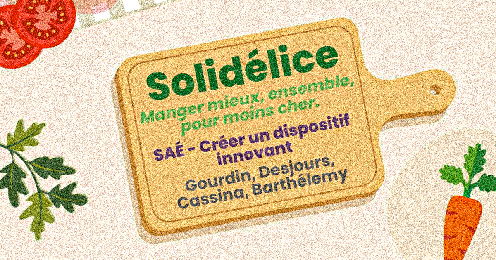
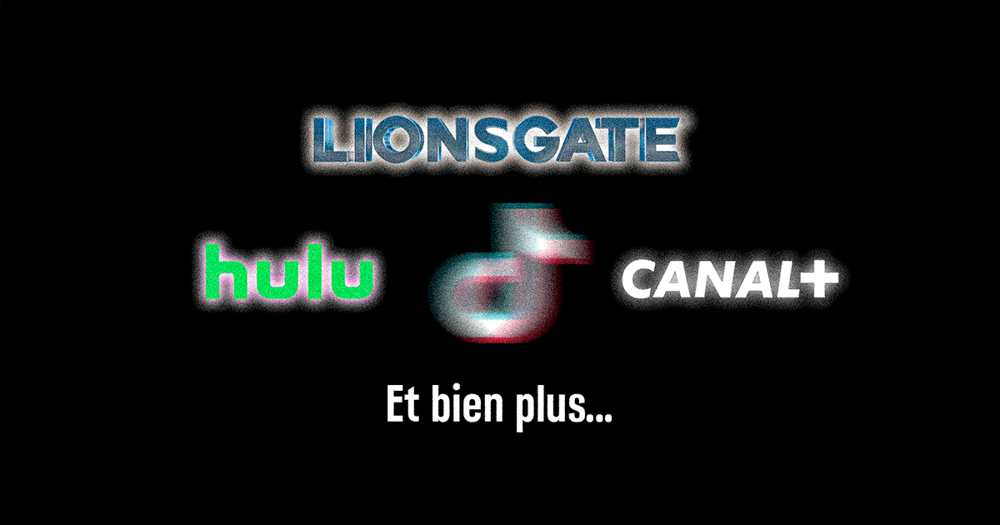

SAÉ — Journée Portes Ouvertes Génie Biologique
Stratégie de communication globale pour les JPO du département Génie Biologique : SWOT, supports visuels, vidéo d'interview et coordination des équipes bénévoles.
Chargement du portfolio de
Barthélémy Joris
0%

Futur Chargé de Communication
Stratégie digitale & Communication
"Donner de la voix aux marques qui ont quelque chose à dire."
Étudiant en BUT Communication à l'IUT de Dijon, je me spécialise dans la stratégie digitale, le community management et la communication événementielle. Passionné par les réseaux sociaux et la création de contenu, je construis des présences de marque cohérentes et engageantes.
À travers mes expériences en agence, en institution publique et en grande distribution, j'ai développé une polyvalence rare : de la production visuelle à la gestion de communautés, en passant par l'analyse de performance et la coordination de projets.
Localisation
Dijon, France
Spécialisation
Communication événementielle · Marketing · Stratégie digitale
Langues
Soft skills
Surveiller l'actualité en temps réel et produire un contenu pertinent rapidement après un événement ou une tendance.
Concevoir une communication alignée sur les objectifs business, avec une lecture claire des enjeux de marque à court et long terme.
Fédérer une équipe, collaborer avec des intervenants variés et adapter sa communication selon les interlocuteurs.
Interpréter les données de performance, identifier les leviers d'optimisation et transformer les insights en décisions concrètes.
Stage Communication — Intermarché
Stage · Lyon
Intégré au sein de l'équipe communication d'un magasin Intermarché à Lyon, je participe à la création des supports locaux, à l'animation des réseaux sociaux et à la mise en place d'actions promotionnelles.
Objectifs : Développer la présence digitale, augmenter l'engagement sur les réseaux sociaux et produire des supports visuels cohérents avec la charte Intermarché.
Stage Communication — France Travail
Stage · Agence de Valmy, Dijon
Au sein de l'agence France Travail de Valmy (Dijon), j'ai contribué à la communication interne et externe, produit des supports et créé des contenus pour les réseaux sociaux.
Résultats : Supports validés par l'équipe, montée en compétences sur les outils institutionnels.
Stage Ressources Humaines — France Travail
Stage · Agence de Valmy, Dijon
Accueil et suivi des demandeurs d'emploi, rédaction de comptes-rendus et mise à jour des outils de gestion interne.
Résultats : Développement des compétences en communication interpersonnelle et compréhension d'une structure publique.
Création & Réalisation de contenus vidéo pour studios et plateformes
Projet personnel · Réseaux sociaux
Création et animation de plusieurs comptes TikTok en autonomie. Production de contenus vidéo (montage à l'aide de plusieurs logiciels comme AfterEffects, Premiere Pro etc), gestion des communautés et collaboration avec plusieurs marques et groupes comme Lionsgate, Hulu, Canal+.
Résultats : Plusieurs centaines de millions de vues cumulées. Maîtrise des algorithmes TikTok et des mécaniques de contenu viral.
Stage — Meroje & Co
Agence de communication · Meyzieu, Lyon
Première immersion au sein de Meroje & Co, agence basée à Meyzieu (Lyon), spécialisée dans la photographie et l'événementiel. Participation à la couverture d'événements aux côtés d'un photographe professionnel.
Résultats : Découverte du monde de la communication professionnelle. Expérience fondatrice qui a confirmé ma vocation.
Cliquez sur "VOIR PLUS" pour découvrir les compétences que j'ai acquises à l'IUT et dans mes projets personnels et leurs applications concrètes.
"La communication est une science difficile. Ce n'est pas une science exacte. Ça s'apprend et ça se cultive."Jean-Luc Lagardère — Entrepreneur & dirigeant de médias

Stratégie de communication globale pour les JPO du département Génie Biologique : SWOT, supports visuels, vidéo d'interview et coordination des équipes bénévoles.

Création complète de l'identité de marque d'une association solidaire anti-gaspillage : charte graphique, stratégie digitale, maquette web et calendrier éditorial.

Production de vidéos sponsorisées pour des marques et sorties de films : analyse du brief, montage, adaptation aux tendances TikTok pour maximiser l'engagement.
Ouvert aux opportunités d'alternance, de stage ou de collaboration dans la communication et la stratégie digitale.